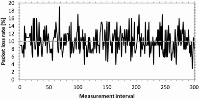
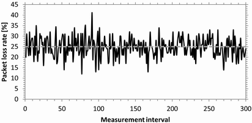
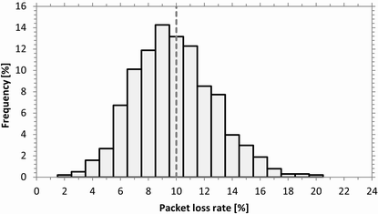
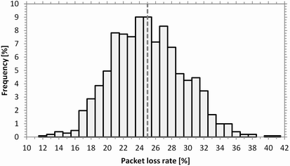

Packet Loss Rate
The effect of configured packet loss rates is tested without configured delay, with UDP and with an average packet rate of one packet per ms.
Each packet loss rate result value is derived from a measurement interval of 100 packets. The following figures show the measured packet loss rates for the first 300 measurement intervals (30000 packets). The configured packet loss rates are 10 % and 25 %, as indicated by the gray dashed lines.

Packet loss rate vs. measurement interval (10 % loss configured)

Packet loss rate vs. measurement interval (25 % loss configured)
The following figures show the distribution of the packet loss rates over all measured intervals.

Packet loss rate distribution (10 % packet loss configured)

Packet loss rate distribution (25 % packet loss configured)